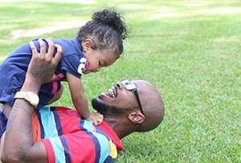

A great day of giving through Midlands GivesOn May 5, supporters of Fathers and Families in South Carolina had the opportunity to give to the Center, and see their gift doubled, through Midlands Gives, a special one-day, communitywide fund-raising program sponsored by the Central Carolina Community Foundation.READ MORE

New employees gather for training in ColumbiaOn September 2, new employees from our programs across South Carolina gathered in Columbia for training.
They heard inspiring words from Pat and Ricky. Gale enlightened them on legal matters. web..READ MORE